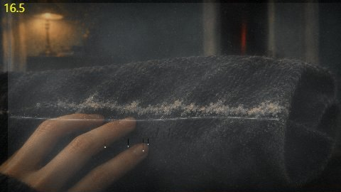
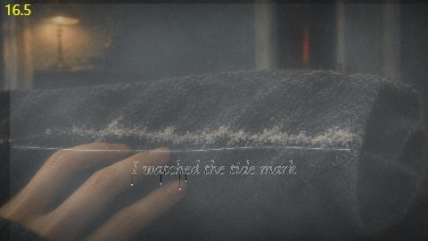
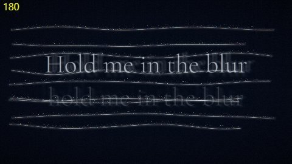
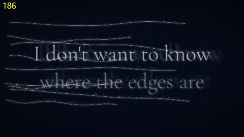
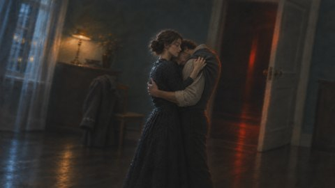
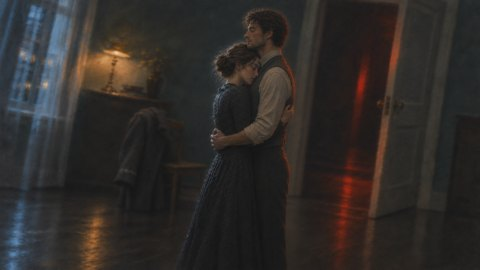

Tide Mark
어떻게 만들었나
구상
이 영상은 코드가 매 순간 그려 내는 영화입니다. 그림은 방과 사물을 맡고, 코드는 그림 위에 깔린 김(안개), 밀물, 소금 선, 가사를 곡의 시간에 맞춰 그립니다. 가사는 김 서린 유리에 손가락으로 쓴 것처럼 닦인 자리로 나타났다가 다시 김에 덮입니다. 후렴마다 밀물이 화면을 덮었다 빠지고, 빠질 때마다 소금 선이 하나씩 남습니다. 브리지 끝에서 악기가 빠지면 그림이 모두 빠지고 영상 내내 쌓인 소금 선만 남습니다.
무엇을 그림이 맡고 무엇을 코드가 그릴지, 가사 줄마다 어떻게 움직일지, 컷 28개가 앞 장면에서 무엇을 넘겨받는지를 먼저 표로 써서 승인받은 뒤에 그렸습니다.
곡 분석
- 템포 78 BPM(기계 추정, 첫 박은 청취로 확인하지 않음)
- 도입 0–14초, 1절 14초, 프리코러스 38초, 후렴 52초, 기타 간주 77초, 2절 87초, 후렴 124초, 브리지 151초
- 172.5–191초: 악기가 빠지고 보컬만 남음. 191초 드럼 복귀, 197–228초가 곡에서 가장 큰 구간
- 가사 시각: 처음 받아쓰기가 노래를 한국어로 잘못 인식해 쓸 수 없었습니다. 그래서 사용자가 준 가사 원문을 분리한 보컬에 강제 정렬해 60줄의 시각을 얻었습니다.
고친 것






- 곡에서 가장 큰 구간이 화면에서도 가장 커야 합니다. 첫 전곡 렌더에서 200–220초의 움직임(1.34)이 140–160초(1.42)보다 작았습니다. 마지막 후렴의 반응을 키우고 몽타주에 두 박마다 충격을 더해 그 구간만 다시 렌더링했고, 1.51이 되었습니다.
- 'let it burn'이 글자 대신 주황색 네모로 그려졌던 것, 'it bends apart'가 앞 줄 위에 놓였던 것, 'and find it there'가 다음 줄과 겹쳤던 것을 고쳤습니다.
- 나방 장면 그림에 나방이 그려지지 않아, 따로 그린 나방을 코드로 램프 주위에 날게 하고 킥마다 날개를 접게 했습니다.
숫자
- 1920×1080, 30fps, 7,320프레임, 4분 4초. 암전 0
- 그림: 장면 21장, 사람 자세 5장, 나방 1장. 같은 방과 재킷을 기준 그림 하나로 이었습니다.
- 몽타주(197–212초)는 새 그림 없이 앞 장면 10장을 다시 씁니다. 다시 나올 때는 그 위에 소금 선이 그어져 있습니다.
아직 못 한 것
- 가사 시각과 박자는 기계 추정이며, 귀로 듣고 맞춘 것이 아닙니다.
- 남성 보컬이 들어오는 시점은 측정으로 가려내지 못했습니다.
- 후렴 가사는 구상에서 사람 뒤에 두려 했지만, 사람 그림이 화면 전체를 덮어 앞층에 흐리게 두었습니다.
- 2절 후렴의 두 번째 자세는 다시 그리면서 방의 기울기가 조금 달라져, 자세가 바뀔 때 방이 살짝 움직입니다.
쓴 도구
- 악기 분리와 음악 지도, 보컬 강제 정렬(torchaudio MMS), 깊이 지도
- 그림: OpenAI gpt-image-2.6(flare로 장면, sunburst로 자세 편집)
- 영상: 브라우저에서 WebGL과 Canvas로 매 프레임을 그려 FFmpeg로 묶음
- 글꼴: Cormorant Garamond, 고운바탕(모두 SIL Open Font License)
가사: 미리내맨
음악: Suno
그림: 미리내맨의 지시로 AI가 만듦